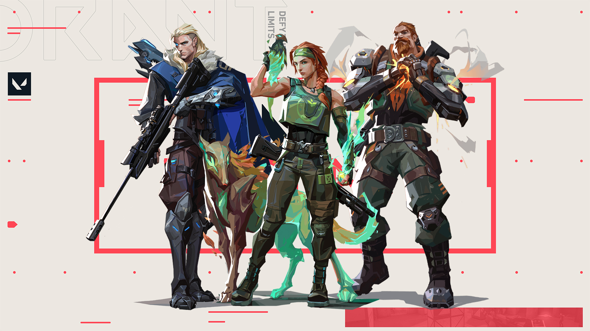
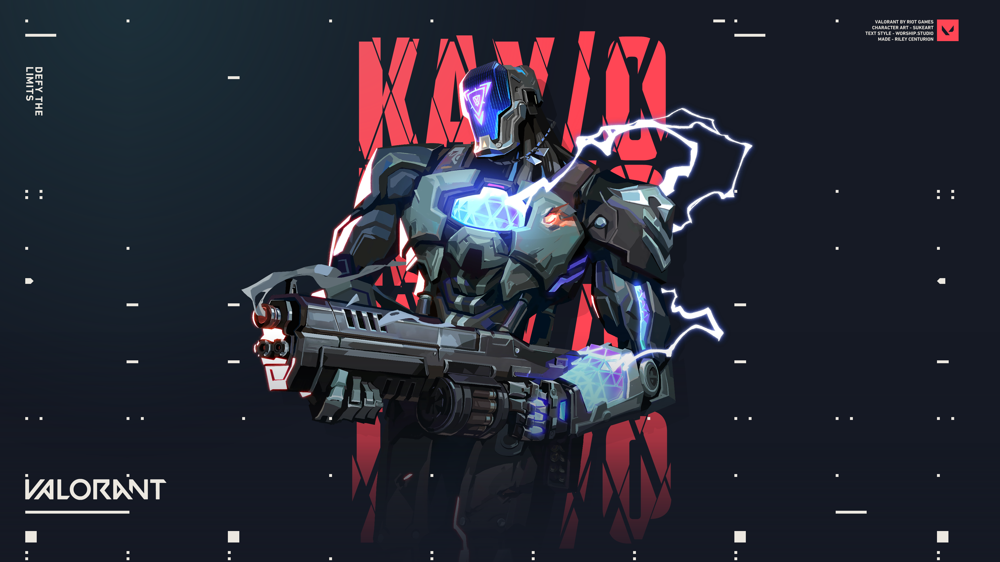

Como o nome sugere, o Iniciador toma a iniciativa sempre que a equipe decide coletivamente enviar um site. Sem eles, torna-se muito difícil penetrar a linha de defesa do inimigo. Se você deseja entrar em um site sem perder um monte de colegas de equipe, os Iniciadores podem ajudá-lo com isso.
Geralmente não há um conjunto de habilidades gerais para Iniciadores. Alguns deles têm habilidades de reconhecimento, enquanto alguns têm flashes e, finalmente, alguns deles podem limpar cantos extremamente difíceis de limpar. Independentemente do Iniciador que você está usando, a equipe dependerá fortemente de você no lado de ataque.
Ao jogar esta classe, você terá que ser muito agressivo. Você é tecnicamente o líder de sua equipe no lado de ataque, pois fornecerá a eles um sinal verde usando suas habilidades no local. Ao fazer um caminho seguro para seus companheiros de equipe entrarem, você também transmite a eles a localização de um inimigo.
DICA: Jogar como um Iniciador não significa que você tenha que entrar no site primeiro. Normalmente, seria exatamente o oposto. Você precisa ficar um pouco longe e colocar toda a sua utilidade para ajudar sua equipe a invadir o local com segurança. Na maioria das vezes, você será a última pessoa a entrar no site.